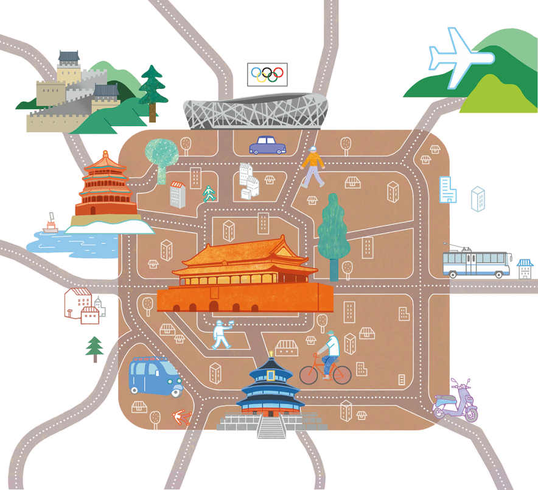

요즘 중국은 대기 오염을 줄여 주는 전동 자전거, 전동 오토바이를 많이 이용합니다. 이밖에 두 대를 연결한 굴절 버스, 전기로 달리는 트롤리 버스, 침대칸이 있는 기차나 버스 등 다양한
교통수단이 있습니다.
타 보고 싶은 중국의 교통수단을 이야기해 봅시다.

활동 예시
삼륜차를 타고 베이징의 구불구불한 옛 골목인
후퉁을 다니며 관광하고 싶다.
참고
중국의 교통수단
·
지하철: 베이징, 상하이 등의 대도시에는 지하철이 잘 갖춰져 있어
이용이 편리하다. 중국의 지하철은 보안 검색이 있어 엑스레이
검색대를 통과해야 개찰구에 들어갈 수 있다. 지하철 요금은
위챗페이나 알리페이 등을 활용하여 큐알 코드로 지불할 수 있다.
·
버스: 중국에는 대·중·소형 버스, 이층 버스(双层巴士 shuãngcéng bãshì), 저상형 버스(低地台巴士 dådìtái bãshì),
굴절 버스(铰接公交车 jiâojiç gõngjiãochç), 전기 버스
(纯电动公交车 chún diàndòng gõngjiãochç) 등이 있다.
기본 요금은 2위안이고, 5km마다 할증되는 지역도 있다.
요금은 현금도 가능하지만 앱이나 카드를 많이 사용한다.
·
택시: 중국의 택시는 도시마다 색깔이 다르다. 기본 요금이
13~16위안이며, 일부 도시에서는 자율 주행하는 무인 택시가
운행되고 있다. 택시 호출은 DiDi(디디추싱) 앱을 많이 사용한다.
보충
베이징의 명소
톈안먼(天安门)
톈안먼은 세계에서 가장 넓은 도시 광장으로, 톈안먼 중앙에는 중화인민공화국을 건국한 마오쩌둥의 초상화가 걸려 있다.
이허위안(颐和园)
이허위안은 청나라 황실의 여름 별궁이다. 높이 60m인 만수산과 면적 2.2㎢인 거대한 인공 호수 쿤밍호가 있다.
만리장성(长城)
중국의 역대 왕조들이 북방 유목 민족의 침공을 막기 위해 세운 성벽으로, 1987년 유네스코 세계 문화유산으로 지정되었다.
국가 체육장(国家体育场)
‘새둥지’라는 의미의 ‘巢鸟(niâocháo)’라고도 불린다. 2008년
베이징 올림픽의 주 경기장으로, 올림픽 개폐회식이 열린 곳이다.
톈탄(天坛)
황제가 하늘에 제사를 올리는 의식을 행하기 위하여 설치한 제단으로, 건축 양식이 독특하고 장식이 아름답다.